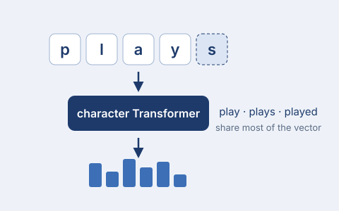

Morphology-Aware Nested Character Embeddings for Word Representation
IEEE ICCCMLA 2025 · Published in IEEE Xplore
Every word is built from its characters by a character-level Transformer, so related forms share most of their computation and unseen words still get a vector. In a seeded re-implementation it beats word embeddings by 14.9 F1 on German NER (63.0 vs 48.2) and matches them on English topic classification.